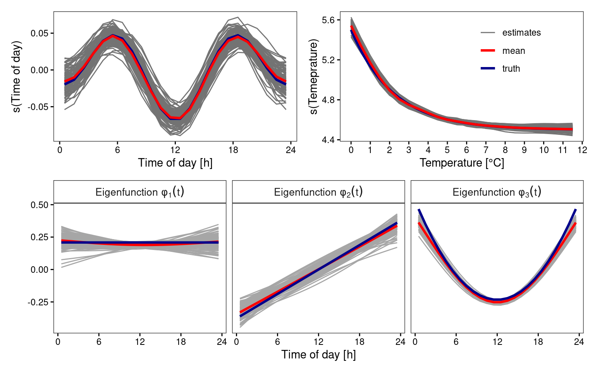

![]()
start_time <- Sys.time()Load libraries
# Package names
packages <- c("benchmarkme", "dplyr", "forcats", "funData", "ggplot2",
"patchwork", "tidyr")
# Install packages not yet installed
installed_packages <- packages %in% rownames(installed.packages())
if (any(installed_packages == FALSE)) {
install.packages(packages[!installed_packages])
}
# Packages loading
invisible(lapply(packages, library, character.only = TRUE))
theme_set(theme_bw() +
theme(panel.grid.major=element_blank(),
panel.grid.minor=element_blank(),
strip.background=element_rect(fill="white"),
strip.text=element_text(size=10, face="bold"),
legend.title=element_blank(),
plot.title=element_text(hjust=.5),
axis.text.x = element_text(color="black"),
axis.text.y = element_text(color="black"),
axis.ticks = element_line(color = "black")
)
)
res <- readRDS("data/simulations/Simulation_study_N300_NAOBS0_SEED42_REML.RDS")SIZE <- 1:100 ## Numer of simulation runs
DAY <- seq(.5, 23.5, 1)/24 ## Day profile sequence for estimation and plotting
Tmin <- 0 ## Minimum Temperature
Tmax <- 12 ## Maximum Temperature
meanU <- 5 ## Mean Temperature level
argvals <- 2*pi*DAYplot intercept
## plot intercept ##
####################
fundf1 <- bind_rows(lapply(SIZE, function(i) res[[i]][[1]][[i]] |>
mutate(i=row_number()) ), .id="SEED")
## from original plain
object2 <- funData::funData(argvals, outer(-.05, sin(argvals*1/2)+cos(argvals*2)))
object3 <- object2@X-mean(object2@X)
fun1plain <- data.frame(cbind("td01"=DAY, "est"=as.numeric(t(object3))))
## mean from simulation
fun1mean <- fundf1 |>
group_by(td01) |>
summarise(est=mean(est))
p1 <- fundf1 |>
group_by(SEED) |>
mutate(td24=DAY*24) |>
ggplot(aes(x=td24, y=est, group=SEED)) +
geom_line(colour="grey45") +
scale_y_continuous(name="s(Time of day)") +
scale_x_continuous(name="Time of day [h]", breaks=seq(0, 24, 6)) +
scale_color_grey() +
geom_line(data=fun1plain, colour="darkblue", aes(x=DAY*24, y=est),
inherit.aes=FALSE, linewidth=1.1) +
geom_line(data=fun1mean, colour="red", aes(x=DAY*24, y=est),
inherit.aes=FALSE, linewidth=1.1)plot f(z)
###############
## plot f(z) ##
###############
fundf2 <- bind_rows(lapply(SIZE, function(i) res[[i]][[2]][[i]] |>
mutate(i=row_number()) ), .id="SEED")
## from original plain
fb1 <- function(z) exp(-z/2.2)-.5 ## Transformation function f(z)
fun2plain <- data.frame(cbind("z"=seq(Tmin, Tmax-.5, .01),
"est"=fb1(seq(Tmin, Tmax-.5, .01)) + meanU))
## mean from simulation
fun2mean <- fundf2 |>
group_by(z) |>
summarise(est=mean(est))
p2 <- fundf2 |>
ggplot(aes(x=z, y=est, group=SEED)) +
geom_line(aes(colour="estimates")) +
scale_y_continuous(name="s(Temeprature)") +
scale_x_continuous(name="Temperature [°C]", breaks=seq(0,12,1)) +
geom_line(data=fun2plain, aes(x=z, y=est, colour="truth"),
inherit.aes=FALSE, linewidth=1.1) +
geom_line(data=fun2mean, aes(x=z, y=est, colour="mean"),
inherit.aes=FALSE, linewidth=1.1) +
scale_color_manual(values=c("grey45", "red", "darkblue")) +
theme(legend.position="inside",
legend.position.inside=c(.7, .7))plot eigenfunctions
#########################
## plot eigenfunctions ##
#########################
fundf3 <- bind_rows(lapply(seq_along(SIZE), function(i) res[[i]][[3]][[i]]), .id="SEED")
## mean values of eigenfunctions
fun3mean <- fundf3 |>
group_by(td01) |>
summarise(ef01=mean(ef01), ef02=mean(ef02), ef03=mean(ef03)) |>
pivot_longer(cols=starts_with("ef"), names_to="efcts") |>
mutate(efcts=fct_recode(as.factor(efcts),
"1" = "ef01",
"2" = "ef02",
"3" = "ef03"))
## simulate _structural_component
plain <- simFunData(DAY*24, M=3, eFunType="Poly", eValType="exponential", N=1)
fun3plain <- plain$trueFuns@X |>
t() |>
'colnames<-' (sprintf("ef%02d", 1:3)) |>
data.frame() |>
mutate(td01=DAY) |>
pivot_longer(cols=starts_with("ef"), names_to="efcts") |>
mutate(efcts=fct_recode(as.factor(efcts),
"1" = "ef01",
"2" = "ef02",
"3" = "ef03"))
p3 <-
fundf3 |>
pivot_longer(cols=starts_with("ef"), names_to="efcts") |>
mutate(efcts=fct_recode(as.factor(efcts),
"1" = "ef01",
"2" = "ef02",
"3" = "ef03")) |>
mutate(efcts=as.character(efcts)) |>
ggplot(aes(x=td01*24, y=value, group=SEED)) +
geom_line(colour="grey65") +
facet_wrap(~efcts, scales="free_x",
labeller=label_bquote(cols=Eigenfunction~phi[.(substr(efcts, 1, 3))](t))) +
scale_x_continuous(name="Time of day [h]", breaks=seq(0, 24, 6)) +
labs(y="") +
theme(legend.position="none") +
scale_color_grey() +
geom_line(data=fun3mean, colour="red", aes(x=td01*24, y=value, colour=efcts),
inherit.aes=FALSE, linewidth=1.1) +
geom_line(data=fun3plain, aes(x=td01*24, y=value, colour=efcts),
inherit.aes=FALSE, linewidth=1.1, colour="darkblue")combine plots
(p1 | p2) / p3
Computational and session information
Hardware information:
get_cpu()$vendor_id
[1] "GenuineIntel"
$model_name
[1] "Intel(R) Core(TM) i7-8565U CPU @ 1.80GHz"
$no_of_cores
[1] 8get_ram()16.4 GBComputation time:
print(paste("Computation time:", round(Sys.time() - start_time, 2)[[1]], "seconds"))[1] "Computation time: 12.89 seconds"Session information:
sessionInfo()R version 4.3.1 (2023-06-16)
Platform: x86_64-pc-linux-gnu (64-bit)
Running under: Debian GNU/Linux 11 (bullseye)
Matrix products: default
BLAS: /usr/lib/x86_64-linux-gnu/openblas-pthread/libblas.so.3
LAPACK: /usr/lib/x86_64-linux-gnu/openblas-pthread/libopenblasp-r0.3.13.so; LAPACK version 3.9.0
locale:
[1] LC_CTYPE=en_GB.UTF-8 LC_NUMERIC=C
[3] LC_TIME=en_GB.UTF-8 LC_COLLATE=en_GB.UTF-8
[5] LC_MONETARY=en_GB.UTF-8 LC_MESSAGES=en_GB.UTF-8
[7] LC_PAPER=en_GB.UTF-8 LC_NAME=C
[9] LC_ADDRESS=C LC_TELEPHONE=C
[11] LC_MEASUREMENT=en_GB.UTF-8 LC_IDENTIFICATION=C
time zone: Europe/Berlin
tzcode source: system (glibc)
attached base packages:
[1] stats graphics grDevices utils datasets methods base
other attached packages:
[1] tidyr_1.1.2 patchwork_1.2.0.9000 ggplot2_3.5.1
[4] funData_1.3-8 forcats_1.0.0 dplyr_1.1.2
[7] benchmarkme_1.0.8
loaded via a namespace (and not attached):
[1] utf8_1.2.4 generics_0.1.3 stringi_1.5.3
[4] lattice_0.20-45 digest_0.6.35 magrittr_2.0.3
[7] evaluate_0.23 grid_4.3.1 iterators_1.0.13
[10] fastmap_1.1.1 foreach_1.5.1 doParallel_1.0.17
[13] jsonlite_1.8.8 Matrix_1.5-3 httr_1.4.7
[16] purrr_1.0.2 fansi_1.0.6 scales_1.3.0
[19] codetools_0.2-19 abind_1.4-5 cli_3.6.2
[22] rlang_1.1.3 ellipsis_0.3.2 munsell_0.5.1
[25] withr_3.0.0 yaml_2.3.8 tools_4.3.1
[28] parallel_4.3.1 colorspace_2.1-0 vctrs_0.6.5
[31] R6_2.5.1 lifecycle_1.0.4 stringr_1.4.0
[34] htmlwidgets_1.6.4 pkgconfig_2.0.3 pillar_1.9.0
[37] gtable_0.3.4 glue_1.7.0 benchmarkmeData_1.0.4
[40] xfun_0.43 tibble_3.2.1 tidyselect_1.2.0
[43] rstudioapi_0.13 knitr_1.45 farver_2.1.1
[46] htmltools_0.5.8.1 rmarkdown_2.26 labeling_0.4.3
[49] compiler_4.3.1 Reuse
Citation
BibTeX citation:
@online{wittenberg2024,
author = {Wittenberg, Philipp and Neumann, Lizzie and Mendler,
Alexander and Gertheiss, Jan},
title = {Covariate-Adjusted {Functional} {Data} {Analysis} for
{Structural} {Health} {Monitoring}},
date = {2024-10-07},
doi = {10.48550/arXiv.2408.02106},
langid = {en}
}
For attribution, please cite this work as:
Wittenberg, Philipp, Lizzie Neumann, Alexander Mendler, and Jan
Gertheiss. 2024. “Covariate-Adjusted Functional Data Analysis for
Structural Health Monitoring.” arXiv:2408.02106. October 7, 2024.
https://doi.org/10.48550/arXiv.2408.02106.